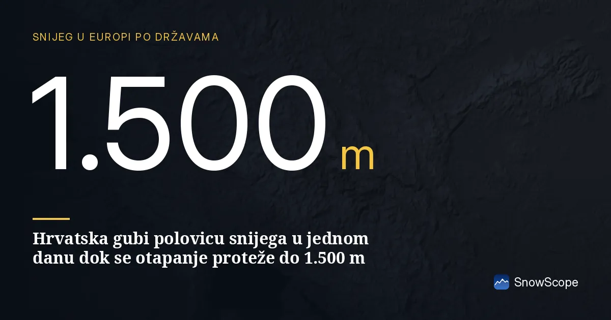

Hrvatska gubi polovicu snijega u jednom danu dok se otapanje proteže do 1.500 m
Topao dan 16. studenoga prepolovio je snijeg na Hrvatskoj sa 1.830 km² na 880 km². Otapanje je snježnu liniju pomaknulo do 1.500 m, ostavljajući golu tlo na nižim brdima i samo mrljave bijele površine iznad te visine.
Pogledajte prognozu snijega za Rudnik Tršće u aplikaciji SnowScopeVisina snijega, upozorenja i 3D karta, besplatno.
Gdje je snijeg otišao
Juče vazdušna masa blagih temperatura prešla je cijelu državu i izbrisala je 950 km² izmjerenog snijega u samo 24 sata. SnowScope jasno pokazuje ovo brzo povlačenje: snježna površina pala je sa skoro 21 posto planinskog područja Hrvatske na samo 10 posto danas.
Otapanje nije bilo jednoliko. Između 1.500 i 2.000 m, srednja dubina je ostala na 2 cm i pokrivanje je zadržalo 59 posto. Ispod 1.500 m, skoro sav snijeg je nestao. Pojas između 1.000 i 1.500 m sada ima samo 16 posto pokrivanja, a ispod 1.000 m ostaje samo 8 posto — uglavnom izolirane mrlje na sjevernoj ekspoziciji.
| Skijalište | Visina snijega | Novi snijeg, 72 h | Sljedeći dani | Vrh |
|---|---|---|---|---|
| Rudnik Tršće | 17 cm | 0 cm | 0 cm | 1.019 m |
| Platak | 11 cm | 0 cm | 0 cm | 1.354 m |
| skijalište Vučići | 7 cm | 0 cm | 0 cm | 402 m |
| Sljeme | 6 cm | 0 cm | 0 cm | 1.029 m |

Dubina snijega po visini
Visina sada bitno. Rudnik Tršće, na 1.019 m, zadržava 17 cm na svojoj meteorološkoj stanici — najdublji snijeg u Hrvatskoj danas. Platak, viši na 1.354 m, pokazuje 11 cm. Oba se nalaze blizu ili odmah iznad snježne linije.
Ispod toga, uvjeti su tanki. Sljeme, na 1.029 m, ima samo 6 cm. skijalište Vučići, najmanja skijaška stanica na 402 m, zadržava samo 7 cm. Na tako tankom snijegu iz ranog sezonu, stijene mogu biti blizu površine.
Što se desilo ovog tjedna
Otapanje se dogodilo brzo, ali snježno pokrivanje je raslo od prošlog tjedna. 9. studenoga, samo 40 km² Hrvatske je bilo bijelo. Danas je 880 km² — porast od 840 km² u sedam dana. Taj rast je došao iz ranog hladnog perioda i laganog snijega od 10. do 15. studenoga, prije nego što je juče toplo vrijeme obrnulo trend.
Gdje je najbolji snijeg sada
Rudnik Tršće vodi sa 17 cm, slijedi Platak sa 11 cm. Oba se nalaze u zoni gdje se snježna linija sada nalazi. Najviše padine tih područja, iznad 1.500 m, imaju bolje pokrivanje od nižih staza, ali dubine su i dalje skromne za studeni.
Sljeme i skijalište Vučići su marginalni — 6 i 7 cm. Ove niže skijaške stanice neće biti dobra za skijanje dok ne stignu jaće padaline snijega.
Što dolazi dalje
Nema novog snijega u sljedećih tri dana. Najsnježniji dan u sljedećem tjednu je 23. studenoga, kada se predviđa 5 cm iznad 1.500 m. Do kraja sljedećeg tjedna (24. do 30. studenoga) veći vremenski sustav donosi do 11 cm novog snijega.
Snijeg će početi padati na niže terene 21. studenoga, tako da se sljedeći prozor za akumulaciju tada otvara. Staze za ranu sezonu polako će se ispunjavati nakon toga.
Kako se Hrvatska uspoređuje
Susjedna Slovenija ima više snijega: 15 posto pokrivanja naspram 10 posto Hrvatske, sa 28 cm na voditeljici Gače. Bosna i Hercegovina ima samo 2 posto pokrivanja ali njena najveća vrhova — oko Skijališta Kozara na 24 cm — drže više snijega nego što ima najbolja stanica Hrvatske. Sve tri zemlje čekaju na svježi snijeg da grade skijasku bazu.
Savjeti za skijaše
- Skirajte iznad 1.500 m ako idete u sljedeća dva dana. Snijeg na nižim visinama je tanak i vjerojatne su mrlje stijene.
- Rudnik Tršće i Platak su vam najbolje opcije do 21. studenoga. Nakon toga, pazite na akumulaciju na višim padinama.
- Očekujte brzo otapanje ako dođe drugi topao dan. Snijeg iz ranog sezonu je krhak na blagim nagibima. Tražite zasjenjene staze sa sjevernom ekspozicijom.
- Prije nego što odete van-staza, provjerite najnoviji bilten o lavinama od nadležne vlasti. Tanki snijeg preko strmog terena može sakriti opasnosti.
- Više snijega se predviđa od 21. studenoga nadalje. Čekajte dublju bazu ako želite stabilno skijanje ispod 1.500 m.
About these numbers
Resort snow depths are the deepest snow on the resort's upper slopes on the date shown; they are estimates for an area, not a measurement at one point. Forecasts can change. Always read the official avalanche bulletin before going off-piste.
Cite this report
For research, teaching or the press: the numbers and charts are free to reuse under CC BY 4.0 with this citation.
SnowScope (2026), Hrvatska gubi polovicu snijega u jednom danu dok se otapanje proteže do 1.500 m, https://snowscope.app/blog/hr/2026/11/croatia-snow-report-16-november-2026.html, accessed 2026-11-16
SnowScope (Atlas Labs). (2026, November 16). Hrvatska gubi polovicu snijega u jednom danu dok se otapanje proteže do 1.500 m. SnowScope snow reports. https://snowscope.app/blog/hr/2026/11/croatia-snow-report-16-november-2026.html
BibTeX
@misc{snowscope2026croatiasnowreport16novem,
author = {{SnowScope (Atlas Labs)}},
title = {Hrvatska gubi polovicu snijega u jednom danu dok se otapanje proteže do 1.500 m},
year = {2026},
month = nov,
howpublished = {\url{https://snowscope.app/blog/hr/2026/11/croatia-snow-report-16-november-2026.html}},
note = {Published 2026-11-16 20:42 UTC; accessed 2026-11-16}
}· CC BY 4.0 · Methods, data and tools →
Rudnik Tršće: snow and temperature by height, this winter vs last (tools) →
Follow Rudnik Tršće
Besplatno: poruka kada dolazi novi snijeg i prognoza svako jutro.